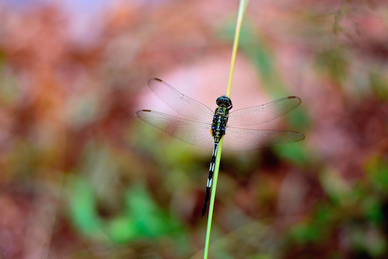
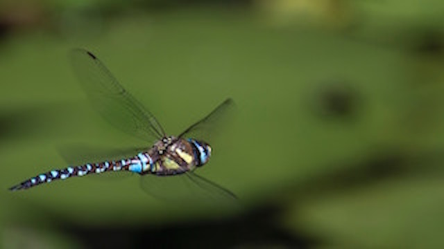

Dragonfly as Power Animal & Adaptability
Written by Monique
The dragonfly totem carries the wisdom of transformation and adaptability in life. As spirit animal, the dragonfly is connected to the symbolism of change and light. When the dragonfly shows up in your life, it may remind you to bring a bit more lightness and joy into your life. Those who have this animal as totem may be inclined to delve deep into their emotions and shine their true colors.
Dragonfly Meaning
The dragonfly is generally associated with the symbolic meaning of transformation. Here are common meanings for this animal totem:
- Change and transformation
- Adaptability
- Joy, lightness of being
- Symbol of the realm of emotions, invitation to dive deeper into your feeling
- Being on the lookout for illusions and deceits, whether are external or personal
- Connection with nature's spirits, fairies realms
Dragonfly as a power animal
The dragonfly is characterized by amazing flight patterns as it appears to be able to change direction swiftly, gliding through the air with no apparent effort. Its lightness inspires those who have the dragonfly as totem to use their ability to be flexible and highly adaptable in any situation.
Lightness and emotional flexibility
By affinity with the dragonfly aerial lightness, those who have this animal as totem can develop the ability to take things lightly even in the darkest moments. Lightness in feelings, lightness in thoughts. The dragonfly spirit animal invites people to keep a light, positive outlook no matter what.
The dragonfly is often seen around water, ponds or on the edge of a river or lake. It symbolizes the affinity with the realm of feelings, water being a powerful symbol for emotions and the unconscious. If the spirit of the dragonfly comes to you, you may be called to explore your emotions in a light and joyful manner.
Dragonfly and the connection with the spirits of nature
Dragonflies are powerful allies to connect with the spirit of nature. Their fairy-like quality makes them auspicious spirit animals to work with the power of light and fairy realms.
Animal of wonder, the dragonfly can bring forth the enchanting spirit of our own nature. When you see this spirit animal, allow yourself to open up to the magic of nature and the elements.
Dragonfly symbolism in the world & ancient traditions
Japan made the dragonfly its national emblem. It is a symbol of joy and rebirth.In some Native American traditions, it is also symbol of the departed souls.For the Mayan, the dragonfly is the emblematic animal of the goddess of creativity, Ix Chel. It is said that the dragonfly’s wings and magical songs revived her after she almost got killed.